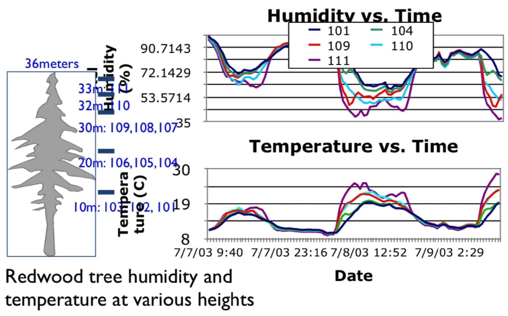
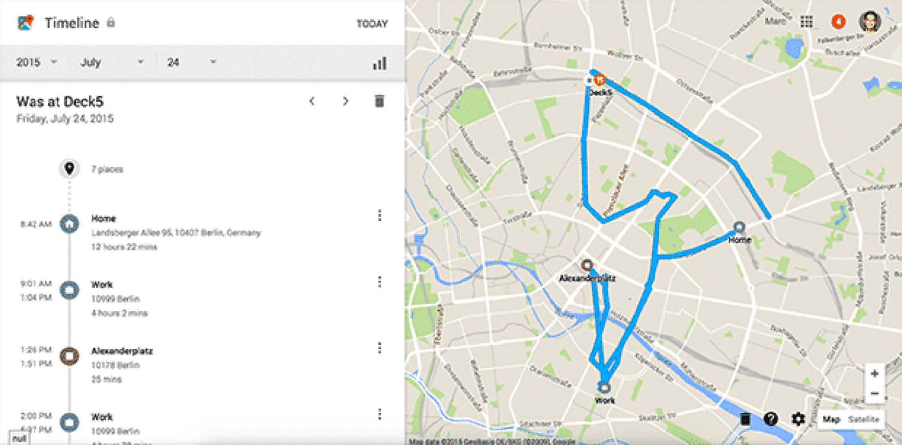
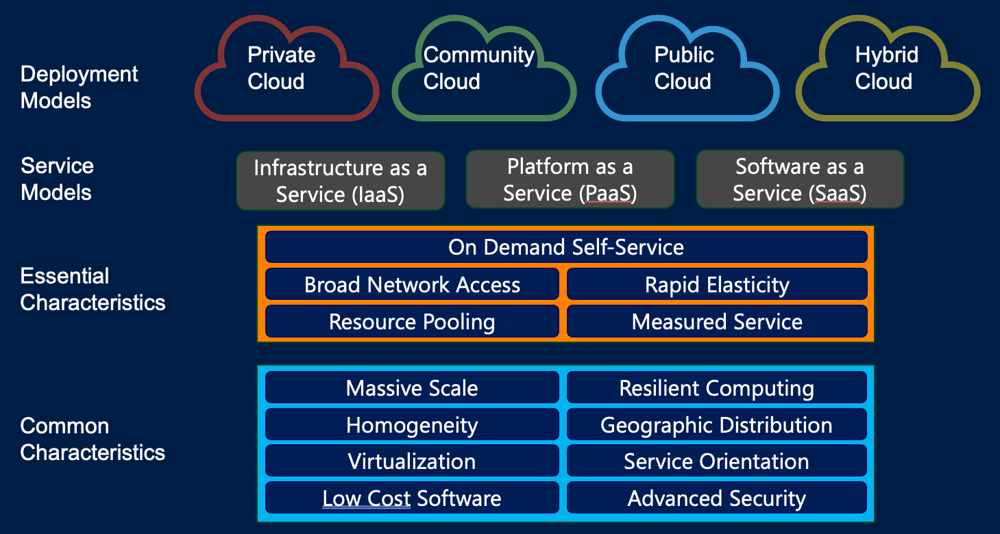
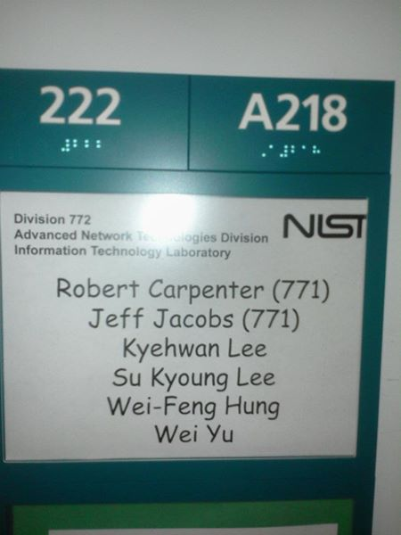
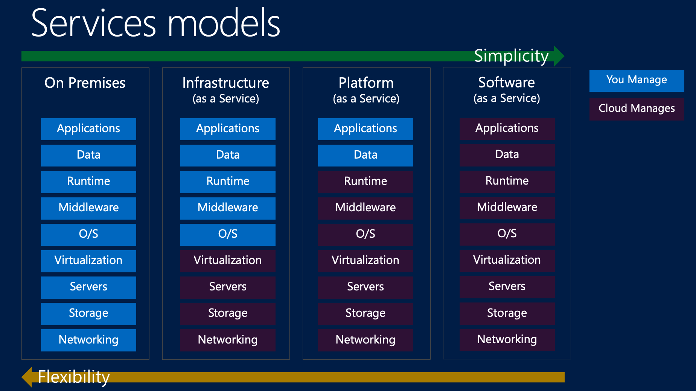
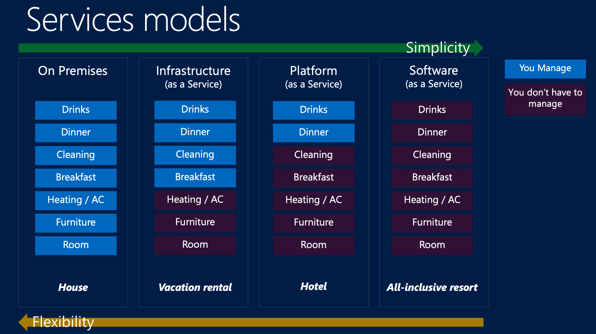

Week 2: Using Cloud Resources for Horizontal Scaling
DSAN 6000: Big Data and Cloud Computing
Fall 2026
Class Sessions
What Makes Data “Big”? Why Do We Need A “Cloud”?
Internet of Things (IoT)
Nearly 100 billion devices generating data:
- Smart home devices (Alexa, Google Home, Apple HomePod)
- Wearables (Apple Watch, Fitbit, Oura rings)
- Vehicles (not just self-driving cars!)
- Industrial sensors
- Smart city infrastructure
- Medical devices, remote patient monitoring

Slide Author: Amit Arora!
Smartphone Location Data

Slide Author: Amit Arora!
Real-World Examples
Netflix
- Scale: 260+ million subscribers generating 100+ billion events/day
- AI Use: Personalization, content recommendations, thumbnail generation
- Stack: S3 → Spark → Iceberg → ML models → Real-time serving
Uber
- Scale: 35+ million trips per day, petabytes of location data
- AI Use: ETA prediction, surge pricing, driver-rider matching
- Stack: Kafka → Spark Streaming → Feature Store → ML Platform
OpenAI
- Scale: Trillions of tokens for training, millions of queries/day
- AI Use: GPT models, DALL-E, embeddings
- Stack: Distributed training → Vector DBs → Inference clusters
Slide Author: Amit Arora!
Data Architecture / Infrastructure Demo

“The Cloud” = Renting Computers from a Big Company
(…That’s it, that’s the whole definition)
Our Toolbox From Now Until December 😎
Big Data Handling
You could technically run all these on your laptop!
…But in this class they’ll run on remote EC2
- Python
- Apache Arrow
- Apache Hadoop \(\leadsto\) Apache Spark
Cloud Services
So You’ve Hit A Data-Related Wall… What Now?
Big Data: “When the size of the data itself becomes part of the engineering problem”
| Can be processed on single machine? | No | Medium (Parallel Processing) |
Big! Parallel + Distributed Processing |
| Yes | Small (Your Laptop) |
Medium (Data Streaming) |
|
| Yes | No | ||
| Can be stored on single machine? | |||
Jeff’s Favorite “Big Data” Definition
Big data is when the size of the data itself becomes part of the problem (Loukides 2010)
- In other words: Your problem becomes a “big data problem” when you hit one or both of the walls!
You vs. Your Opps
So You Find Yourself Smashed Against A Wall…
(Some of yall would fold in this scenario)

The “Pre-Cloud” Approach: Make The One Computer Faster and Faster
It Worked For… Many Decades!

Is Moore’s Law Dead?
…Kind of?
- Focus nowadays: specialized hardware / compute architectures hyper-optimized for particular tasks
- [If you took DSAN 5500] Think of BLAS
- Graphic Processing Units (GPUs)
- Google’s Tensor Processing Units (TPUs)
Even Upgrading Our Hardware Didn’t Help 😭 Now What Do We Do?
…We distribute! (Horizontal Scaling)
Vertical Scaling |
Horizontal Scaling
→
|
|
|---|---|---|
| Processing Power | Fancier CPU (faster/more cores) | More computers \(\implies\) More CPUs |
| Memory | Install more RAM | More computers \(\implies\) More RAM |
| Storage | Bigger hard drive | More computers \(\implies\) More hard drive space |
My Favorite Example Ever
- Spongebob is cooking Krabby Patties too slowly to satisfy ravenous customers…
- Should he upgrade his one spatula? How bout just many simple spatulas at once!
How Do We Achieve This? …That’s Exactly What The Cloud is For!
“The Cloud”: NIST Definition


Simplicity vs. Flexibility

Hotel Analogy

Infrastructure as a Service (IaaS)
- Virtualized computing resources delivered over the internet
- Provider manages: Physical hardware, virtualization, networking, storage
- You manage: Operating systems, applications, runtime, data, middleware
Examples and Use Cases
- Amazon EC2, Microsoft Azure VMs, Google Compute Engine
- Perfect for: Development environments, web hosting, backup & recovery
- Benefits: Rapid scaling, pay-as-you-go, global availability
# Launch a virtual machine in seconds
aws ec2 run-instances --image-id ami-12345 --instance-type t3.largeSlide credit: Amit Arora
Software as a Service (SaaS)
- Complete applications delivered over the internet
- Provider manages: Everything (infrastructure, platform, software)
- You manage: Your data and user access
Examples and Use Cases
- Gmail, Salesforce, Microsoft 365, Zoom
- Perfect for: Business applications, collaboration tools, CRM
- Benefits: No installation, automatic updates, accessible anywhere
- 80% of companies use SaaS applications
Slide credit: Amit Arora
AWS “Core”
- Remotely-Accessible Computers with EC2
- Remotely-Accessible Storage with S3
EC2: Elastic Cloud Compute
HW1:
- Create your own remote EC2 computer instance
- Use it to download (one-way) from remote storage bucket
S3: Simple Storage Service
HW2:
- Create your own remote storage instance
- Read and write to it from your EC2 instance
Athena x Glue: Query S3 Like a Database
HW5:
- Auto-ingest data into an S3 bucket, along with metadata
- Tell Athena the schema of this data using Glue
- Run SQL queries on S3
- You never manually make a DB!
- You never manually set up a server to execute SQL queries or to save their results!
HW2: EC2 🤝 S3
- In Class-Demo: Getting EC2 to talk to S3
References
Kleppmann, Martin, and Chris Riccomini. 2026. Designing Data-Intensive Applications: The Big Ideas Behind Reliable, Scalable, and Maintainable Systems. 2nd edition. Santa Rosa, CA: O’Reilly.
Loukides, Mike. 2010. “What Is Data Science?” O’Reilly Media. June 2, 2010.
Mell, Peter, and Timothy Grance. 2011. “The NIST Definition of Cloud Computing.” National Institute of Standards and Technology, Special Publication 800 (2011): 145.